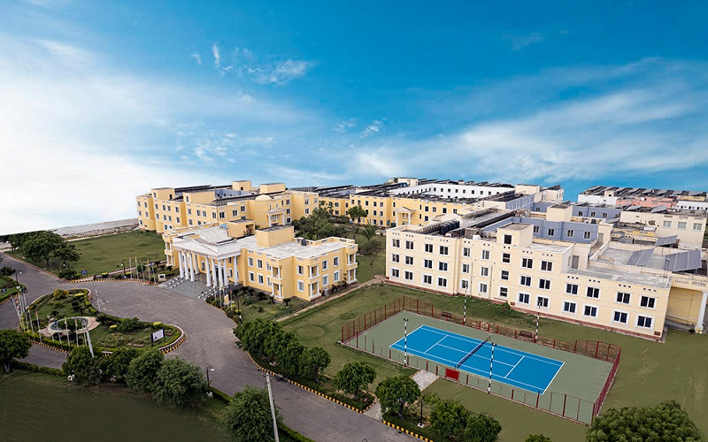
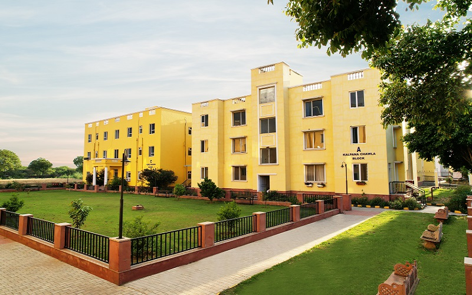

<section class="wifi-campus">
  <div class="container">
    <h1 class="section-title">Wi-Fi Campus</h1>

    <div class="image-gallery">
      
      
      <!--  -->
      
      
      
    </div>

    <div class="content-block">
      <h2>Stay Connected & Secure</h2>
      <p>At Starex University, we believe connectivity is a cornerstone of modern education. Our campus-wide infrastructure ensures seamless access and safety for every student and faculty member.</p>

      <h3>🔗 Uninterrupted Connectivity</h3>
      <ul>
        <li><strong>Campus-wide Wi-Fi:</strong> High-speed internet across classrooms, hostels, and open spaces — enabling research, collaboration, and social connection.</li>
      </ul>

      <h3>🛡️ Enhanced Security</h3>
      <ul>
        <li><strong>Smart Camera Surveillance:</strong> A network of intelligent IP cameras ensures a safe, monitored environment 24/7.</li>
      </ul>
    </div>
  </div>
</section>
